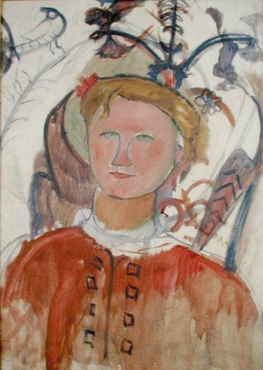
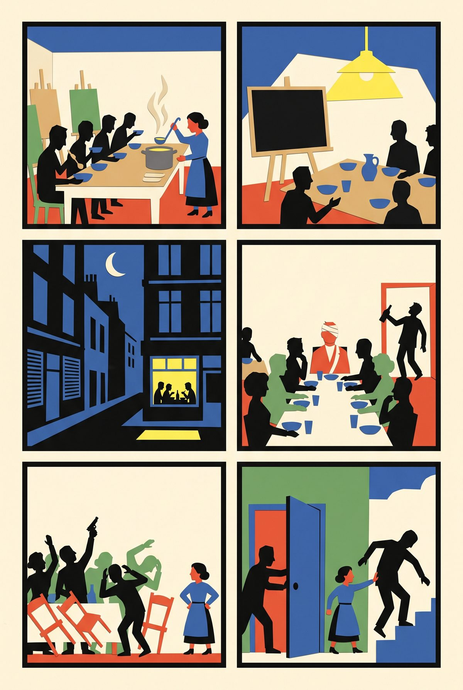
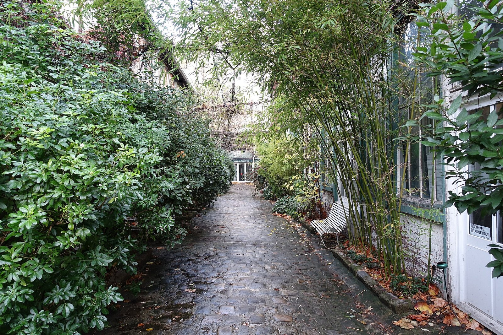

18:07 · five minutes · then 400 m to the station square, stop 3

Amedeo Modigliani, Portrait of Marie Vassilieff, c. 1918. Public domain.
Stand at the gate of the cobbled alley at 21 avenue du Maine. The studio at the end is empty this autumn, between tenants.
▶ Listen · Sixty-five centimes and no curfew · 4 min
Marie Vassilieff, Russian, five feet tall, a student of Matisse's school, ran her own academy in her studio here. In February 1915, the first winter of the war, she turned it into a canteen for artists: broth, meat, vegetables, a salad or dessert, coffee or tea, for sixty-five centimes; wine ten centimes more. Registered as a private club, not a restaurant, it ignored the curfew that shut the cafés early.
January 1917, a banquet for Braque back from the front: Modigliani turned up uninvited and drunk, a pistol appeared, and the story goes that Marie pushed him out and down the stairs while Picasso held the door. She drew the scene afterwards.
Fun fact
She made portrait dolls of her famous friends, shown at the couturier Poiret's in 1916. One of the dolls was Picasso.
Quiz · Why could the canteen keep serving after the wartime curfew?
It was registered as a private club, not a restaurant.
The story in six panels

1February 1915. War. Marie Vassilieff turns her studio into a canteen for artists.
2Broth, meat, vegetables, dessert, coffee: 65 centimes. Wine, 10 more.
3Registered as a private club, not a restaurant, so the curfew did not apply.
4January 1917. A banquet for Braque, back from the front. Modigliani is not invited.
5Modigliani comes anyway, drunk, and then a pistol appears. “Out!”
6All five feet of Marie push him down the stairs while Picasso holds the door.
Drawn in paper-cut style with Gemini from our script; no real person is depicted.
More to look at

The alley today, Villa Marie-Vassilieff, 21 avenue du Maine. Photo Guilhem Vellut, 2016, CC BY 2.0.